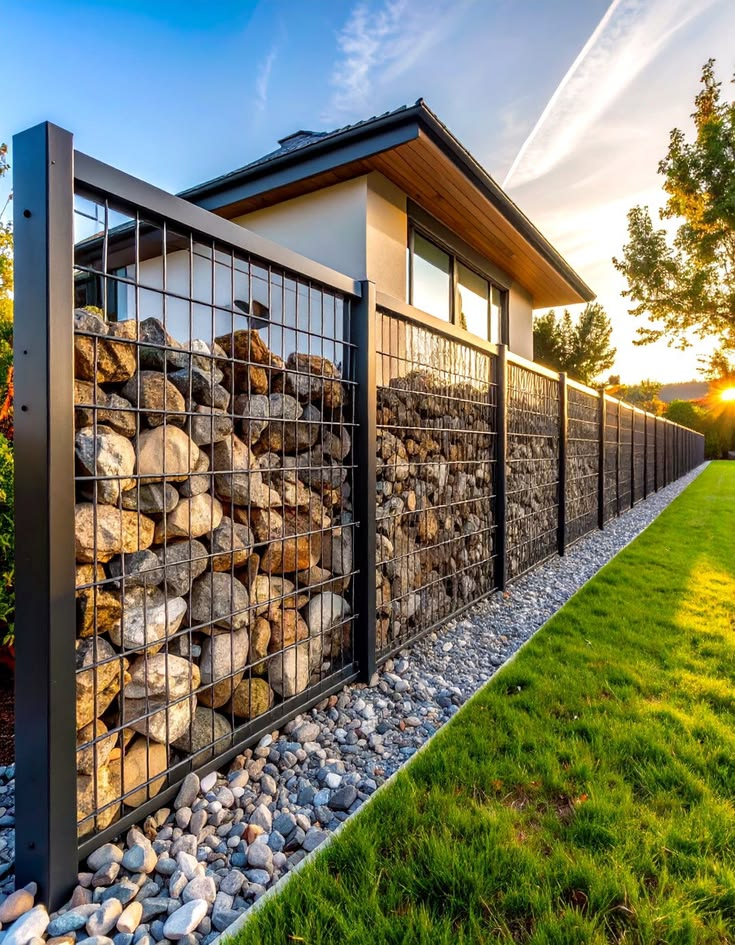

The Future of Wire Mesh in Sustainable Infrastructure Development
How wire mesh and metal fencing contribute to sustainable, long-lasting transportation and public infrastructure projects.
Read MoreAirport fencing, highway barriers, railway security, and bridge safety systems — engineered to protect public infrastructure and ensure transportation safety.
Transportation and public infrastructure projects demand fencing and safety systems that meet rigorous aviation, highway, and railway authority standards. From FAA and ICAO compliant airport perimeter fencing to highway median barriers and railway right-of-way security, Kestrel Metal supplies certified mesh and fencing products engineered for decades of outdoor service. Our solutions protect travelers, secure critical assets, and prevent unauthorized access to restricted infrastructure zones.
Bridge anti-throw screens, railway corridor fencing, and large-scale perimeter systems are manufactured under ISO 9001 quality controls with heavy galvanizing and polyester powder coating for long-term durability. High-volume production capacity and dedicated project logistics support the demanding schedules of government infrastructure programs across 30+ countries worldwide.

Certified fencing and safety systems engineered for transportation and public infrastructure projects worldwide.
FAA and ICAO compliant airport perimeter security fencing engineered to prevent unauthorized access to runways, taxiways, and critical aviation infrastructure. Anti-climb mesh design, heavy-gauge construction, and integrated access control points support regulatory compliance and 24/7 surveillance of airport boundaries.
View Product
3D panel fencing systems for highway median separation, roadside safety, and right-of-way protection. Hot-dip galvanized and powder-coated finishes deliver decades of service in demanding outdoor environments, while modular panel design enables rapid installation across long highway stretches.
View Product
Welded mesh fencing for railway right-of-way protection, preventing trespass and safeguarding passengers from track incursions. Heavy-gauge panels resist cutting and climbing while maintaining visibility for track inspection, supporting compliance with railway authority safety regulations.
View Product
Mesh screens installed on bridge parapets to prevent objects being thrown or falling onto traffic below. Engineered for wind load resistance and long-term outdoor durability, protecting motorists and railway passengers from hazardous debris dropped from elevated structures.
View ProductWe understand the unique challenges transportation and public works agencies face — and we engineer solutions to address each one.
Aviation, highway, and railway authorities impose strict compliance requirements on fencing and safety systems used in public infrastructure.
Certified fencing meeting FAA, ICAO, and DOT standards with full documentation to streamline approvals for aviation and transportation infrastructure projects.
Public infrastructure is a persistent target for vandalism, trespass, and unauthorized access that compromises safety and service continuity.
Anti-climb and anti-cut mesh designs with narrow apertures and heavy-gauge wire deter intrusion while supporting surveillance and detection systems.
Infrastructure fencing must withstand decades of outdoor exposure to UV radiation, moisture, temperature cycling, and pollution without degradation.
Heavy galvanizing and polyester powder coating deliver 30+ year service life in outdoor environments, minimizing maintenance and replacement costs over the asset lifecycle.
Highway, railway, and airport projects require kilometers of perimeter fencing delivered on schedule with consistent quality across the entire installation.
High-volume production capacity and project logistics ensure on-time delivery of consistent, certified products for large-scale infrastructure deployments.
FAA and ICAO compliant airport perimeter fencing meeting international aviation security standards.
Heavy galvanizing with thick zinc coatings for decades of corrosion resistance in outdoor infrastructure environments.
Anti-climb designs with narrow mesh apertures that deter intrusion while supporting surveillance visibility.
Large-scale production capacity to supply kilometers of consistent, certified fencing for major infrastructure programs.
Project logistics support with container loading, export documentation, and on-time delivery coordination handled in-house.
Government-grade security products engineered to meet the rigorous demands of public infrastructure and transportation authorities.
Our products meet the international standards and certifications relevant to this industry.
Quality management system governing all infrastructure fencing and barrier manufacturing.
Airport perimeter fencing compliant with Federal Aviation Administration and ICAO Annex 14 standards.
Highway and transportation infrastructure products meeting American Association of State Highway Officials standards.
Standard practice for installation of chain-link and welded mesh fence for transportation infrastructure.

How wire mesh and metal fencing contribute to sustainable, long-lasting transportation and public infrastructure projects.
Read More
Comprehensive installation guide for welded gabion boxes used in retaining walls, slope stabilization, and highway infrastructure.
Read MoreFrom ancient military defenses to modern highway infrastructure — the engineering evolution of gabion basket technology.
Read MoreContact our engineering team for project-specific product recommendations, custom specifications, and competitive pricing.